温度によって、物質が固体・液体・気体に変化することを状態変化といいます。
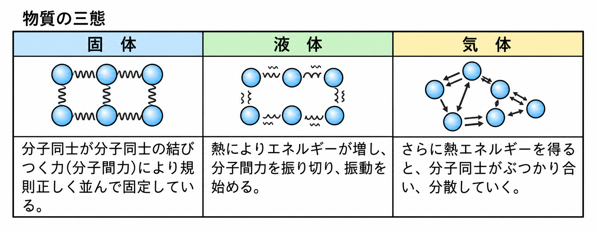
固体は、分子どうしが分子間力によって規則正しく並んで固定しています。熱によりエネルギーが増すと、分子間力を振り切って振動を始め(液体)、さらに熱エネルギーを得ると分子どうしがぶつかり合って分散していきます(気体)。加熱すると分子が離れていき、冷却すると分子どうしがひきつけ合います。
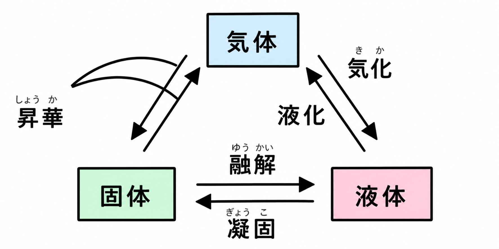
固体→液体の変化を融解、液体→固体の変化を凝固といいます。液体→気体の変化を気化(蒸発)、気体→液体の変化を液化(凝縮)といいます。そして、固体と気体が液体にならずに直接入れかわる変化を昇華といいます。
昇華の例としては、ドライアイスがあります。ドライアイスは二酸化炭素でできていて、固体のまま空気中に置いておくと、液体にならずに直接気体になって消えていきます。
- 融解(固体→液体)／凝固(液体→固体)
- 気化(液体→気体)／液化(気体→液体)
- 昇華……固体⇄気体の変化。液体にならない(例:ドライアイス=二酸化炭素)
- 固体→液体→気体の向き=加熱／その逆向き=冷却
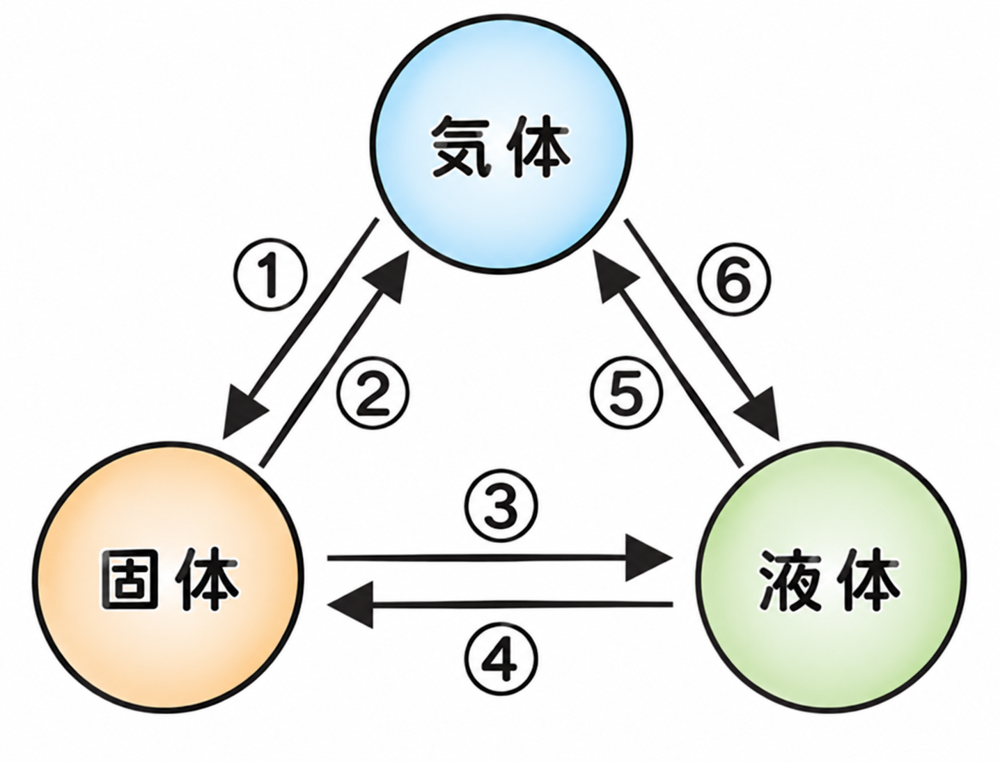
図の③(固体→液体)の変化を融解という。図の④(液体→固体)の変化を凝固という。図の⑤(液体→気体)の変化を気化という。図の⑥(気体→液体)の変化を液化という。図の①・②のように、固体と気体が液体を通らずに直接入れかわる変化を昇華という。
図の③・⑤のように分子が離れていく向きの変化は加熱によって、図の④・⑥のように分子どうしがひきつけ合う向きの変化は冷却によって起こる。
🏆 ベストタイム
一般に、液体から固体になる(凝固する)とき、体積は減ります。ろうそくのろうがとけて固まると、真ん中がへこむのはこのためです。
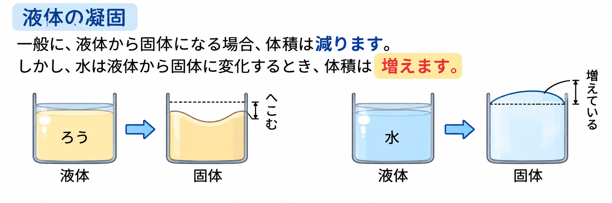
しかし、水は例外です。水が液体から固体(氷)に変化するとき、体積はむしろ増えます。ペットボトルに入れた水を凍らせるとふくらんでしまうのは、このためです。
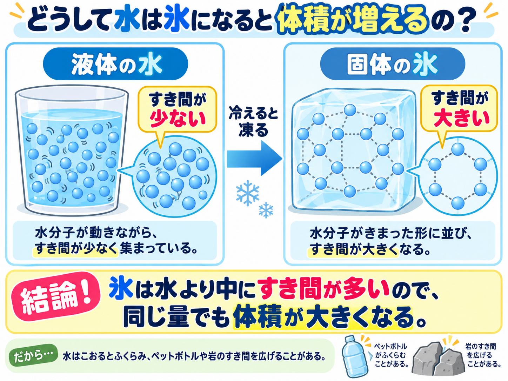
氷になると、水分子が規則正しい形に並び、分子どうしのすき間が大きくなります。状態変化では質量は変わらないので、体積だけが大きくなった氷は、水より密度が小さくなります。そのため、氷は水に浮くのです。
- ふつう、液体→固体(凝固)で体積は減る
- 水は例外:液体→固体(氷)になると体積が増える
- 質量は変化しないので、体積が増えた分だけ密度は小さくなる → 氷は水に浮く
一般に、液体から固体になるとき、体積は減ります。しかし水は例外で、液体から固体(氷)になるとき、体積は増えます。
氷になると、水分子が規則正しい形に並び、分子どうしのすき間が大きくなります。状態変化では質量は変わらないので、体積だけが大きくなった氷は、水より密度が小さくなります。そのため、氷は水に浮きます。
🏆 ベストタイム
下の図は、氷を入れて加熱するときの加熱時間と温度変化を表した図です。
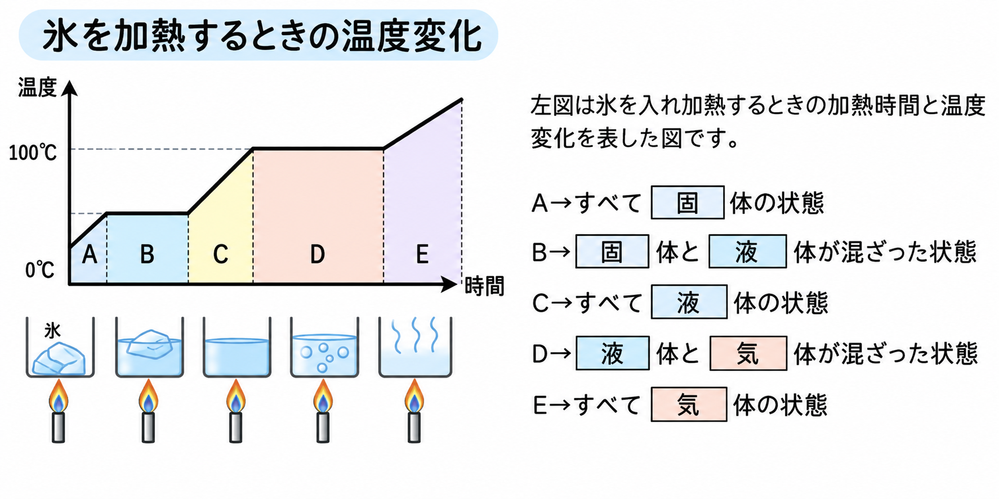
A区間はすべて固体の状態、Bは固体と液体が混ざった状態、C区間はすべて液体の状態、Dは液体と気体が混ざった状態、E区間はすべて気体の状態です。
固体から液体になるときの温度を融点、液体から気体になるときの温度を沸点といいます。水の場合、融点は0℃、沸点は100℃です。水の気体を水蒸気といいます。
※沸とう中にできる「あわ」の正体は水蒸気です。一部の水分子が活発になり、他の水分子をおしのけて空間ができたものが、あわとなって出てきます。
- 融点……固体から液体になるときの温度
- 沸点……液体から気体になるときの温度
- 水の融点は0℃、沸点は100℃
- 状態変化している間(平らな区間)は、加熱しても温度は変わらない
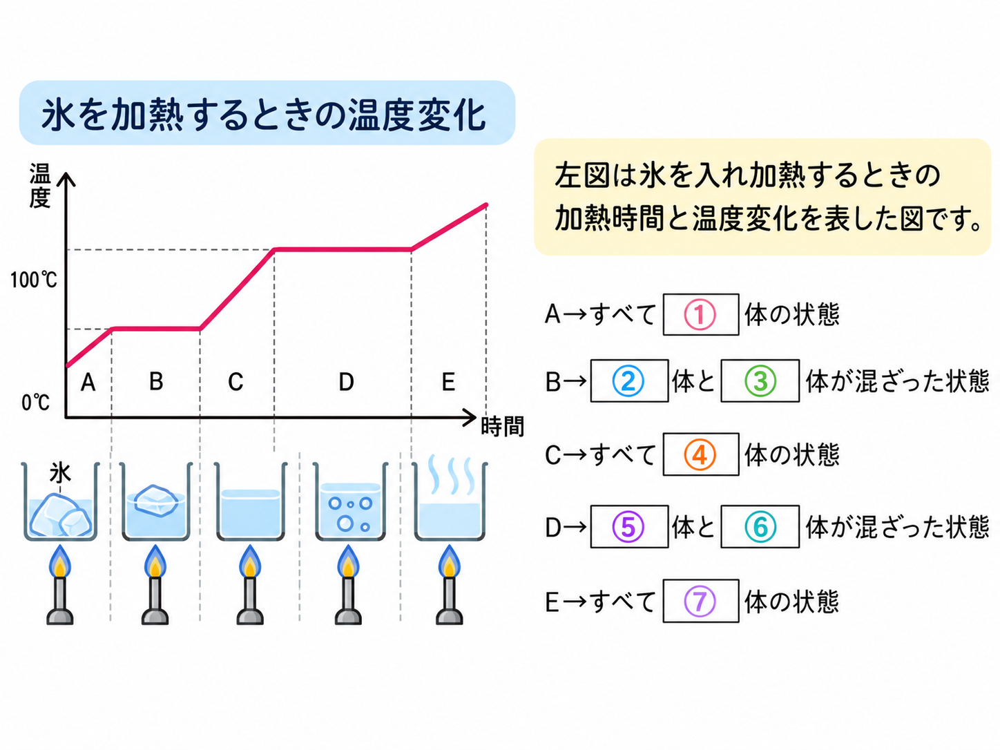
Aの区間はすべて①固体の状態である。Bの区間は②固体と③液体が混ざった状態である。Cの区間はすべて④液体の状態である。Dの区間は⑤液体と⑥気体が混ざった状態である。Eの区間はすべて⑦気体の状態である。
固体から液体になるときの温度を融点という。液体から気体になるときの温度を沸点という。
🏆 ベストタイム
図1について、固体から液体になるときの温度を融点といいます。ナフタレン(融点81℃)とパラジクロロベンゼン(融点54℃)のグラフを見ると、物質によって融点がちがうことがわかります。
図2について、液体から気体になるときの温度を沸点といいます。水とエタノールの混合物を加熱すると、80℃付近で1回、100℃付近でもう1回沸とうし、沸点が一定になりません。
純粋な物質……1種類の物質でできているもの(例:水)
混合物……2種類以上の物質が混ざったもの(例:海水、空気)
- 融点……固体が液体になるときの温度／沸点……液体が気体になるときの温度
- 純粋な物質は融点・沸点が物質ごとに決まった一定の値になる
- 混合物は融点・沸点が一定にならない(水とエタノールの混合物は2回沸とうする)
- 純粋な物質:1種類の物質(例:水)／混合物:2種類以上が混ざったもの(例:海水、空気)
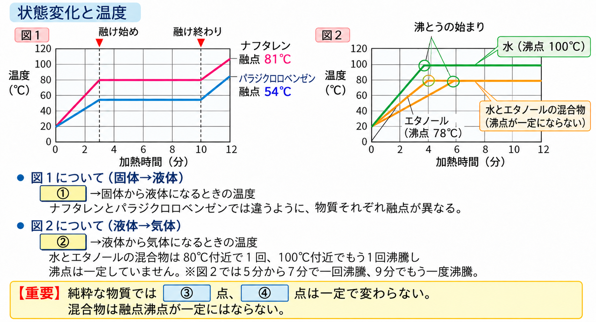
図1の①にあてはまる語句は融点である(固体から液体になるときの温度)。図2の②にあてはまる語句は沸点である(液体から気体になるときの温度)。
【重要】純粋な物質では③融点、④沸点は一定で変わらない。混合物は融点・沸点が一定にはならない。
🏆 ベストタイム
混合した液体を気体にし、それをまた液体にもどすことで、沸点の差を利用して物質を分離する方法を蒸留といいます。
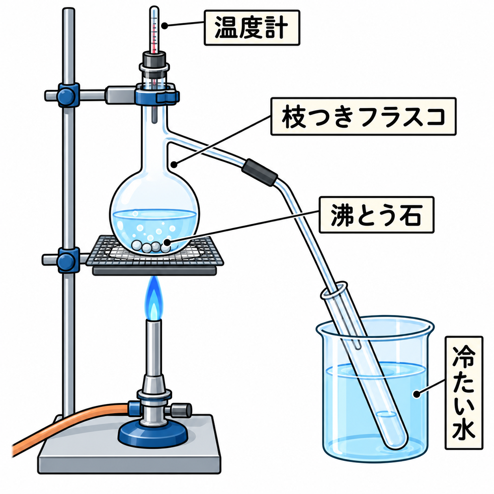
- ①急激な沸とう(突沸)を防ぐため、枝つきフラスコの中には沸騰石を入れる。
- ②温度計の液だめは、枝つきフラスコの枝の付け根の高さに合わせる。これは、フラスコから枝を通って出ていく気体(蒸気)の温度を正しく測るためである。
- ③実験を終えるときは、火を消す前にガラス管を試験管の液体から抜く。これは逆流を防ぎ、フラスコが割れるのを防ぐためである。
▶ エタノールと水の混合物を蒸留すると
水(沸点100℃)とエタノール(沸点78℃)の混合物を加熱すると、沸点の低いエタノールが先に多く気体になって出てきます。加熱を始めて4〜6分の間は、少量の水が混ざったエタノールが試験管にたまります。さらに加熱を続けて8〜10分の間は、少量のエタノールが混ざった水が試験管にたまります。
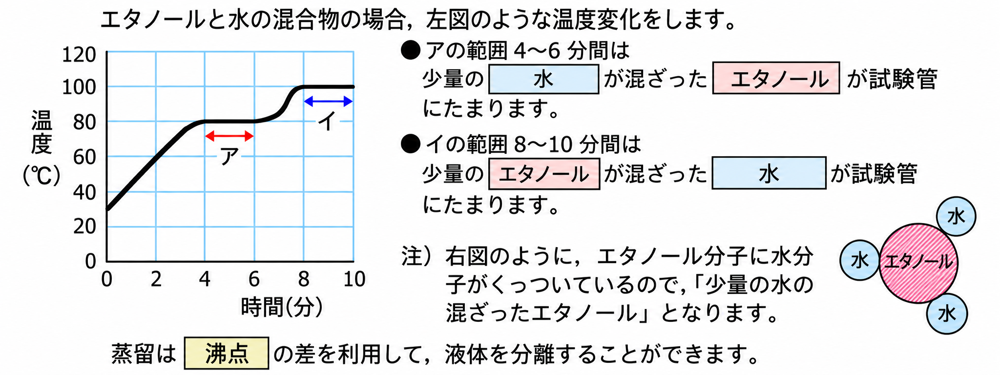
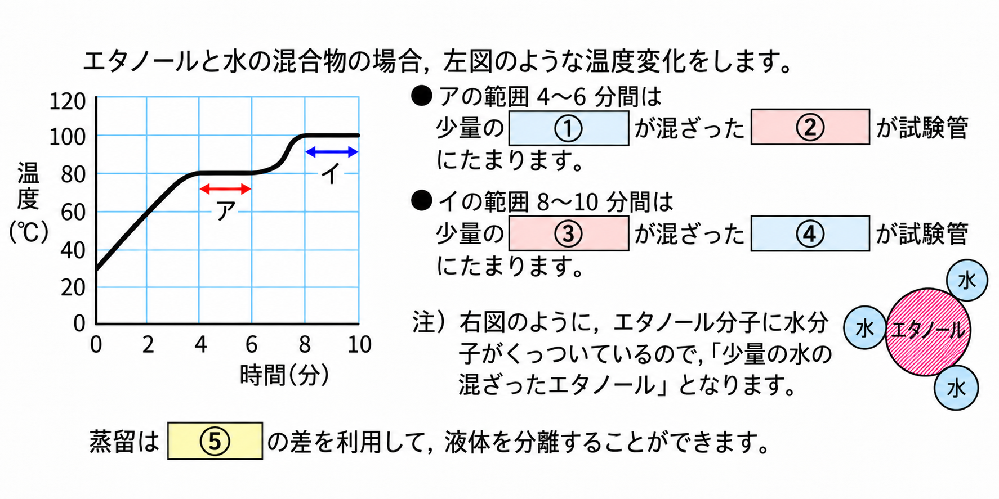
アの範囲(4〜6分間)は、少量の水が混ざったエタノールが試験管にたまります。イの範囲(8〜10分間)は、少量のエタノールが混ざった水が試験管にたまります。
蒸留は沸点の差を利用して、液体を分離することができます。
🏆 ベストタイム
▶ 蒸留の具体例
蒸留は、わたしたちのくらしの中でも広く利用されています。日本酒やビールなどの醸造酒を蒸留すると、アルコール分の多い焼酎やウイスキー、ブランデーなどの蒸留酒ができます。また、原油を熱して蒸留すると、沸点のちがいによってガソリン・灯油・軽油などに分けることができます(石油の精製)。
海水を蒸留すると、塩分をふくまない水(蒸留水)だけを取り出すことができ、水不足の地域や船の上で飲み水をつくるのに利用されています。このほか、草花を水とともに加熱して蒸留し、香りの成分をとり出す香水づくりにも蒸留の技術が使われています。
解)硝酸銀水溶液を加えます。食塩があれば塩化銀が沈殿します(白色の沈殿ができます)。反応しなければ、食塩はふくまれていません。
- 蒸留……液体を沸とうさせて気体にし、冷やして再び液体にもどすことで、沸点の差を利用して物質を分離する方法
- 具体例:焼酎・ウイスキーなどの蒸留酒づくり、石油の精製、海水からの真水づくり、香水づくり
- 突沸を防ぐため、枝つきフラスコには沸騰石を入れる
- 温度計の液だめは枝の付け根の高さに合わせる(出ていく気体の温度を測るため)
- 実験を終えるときは、火を消す前にガラス管を液体から抜く(逆流・フラスコ破損を防ぐ)
- 沸点の低い物質ほど先に気体になって出てくる(エタノールと水なら、はじめはエタノールが多い)
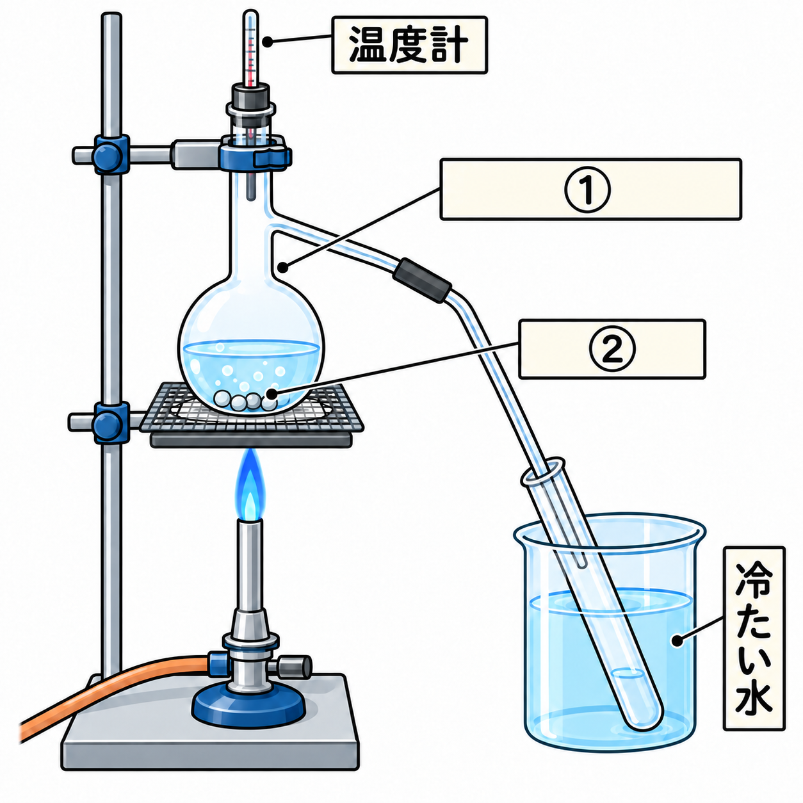
図の①の器具は枝つきフラスコという。図の②は沸騰石で、急な沸とう(突沸)を防ぐために入れる。
実験を終えるときは、火を消す前にガラス管を液体から抜く。これは逆流を防ぐためである。